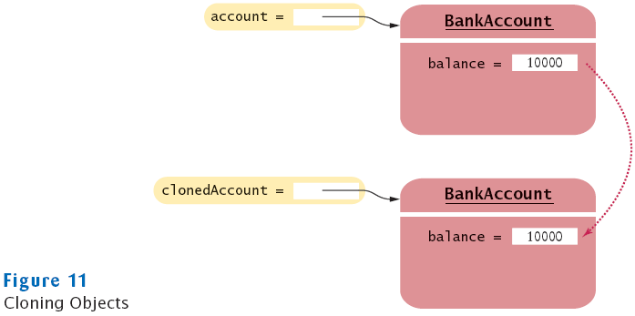

Overriding the clone Method
- Copying an object reference gives two references to same object
BankAccount account2 = account;
- Sometimes, need to make a copy of the object

- Define clone method to make new object (see Advanced Topic 13.6)
- Use clone:
BankAccount clonedAccount = (BankAccount) account.clone();
- Must cast return value because return type is Object